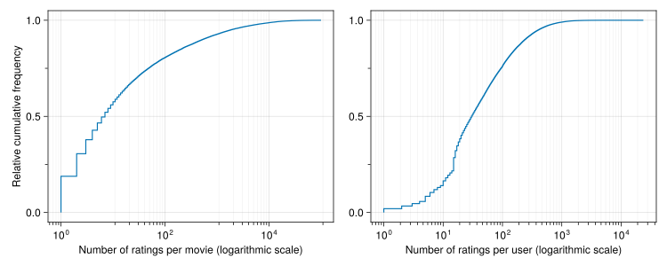
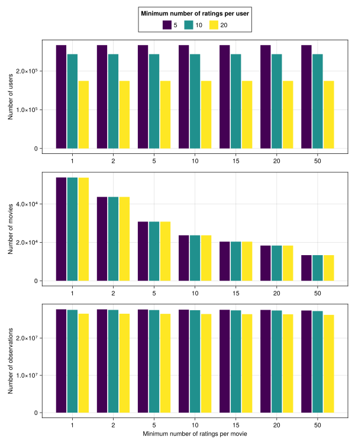
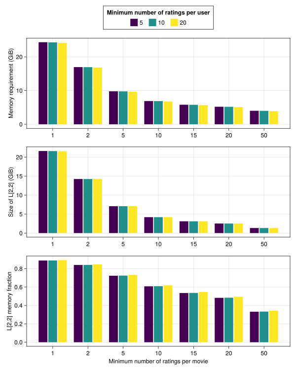
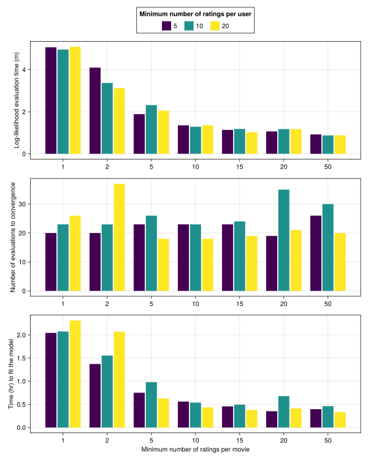
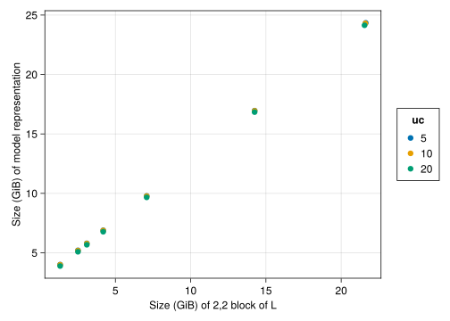

usingAlgebraOfGraphicsusingCairoMakieusingCategoricalArraysusingDataFramesusingEmbraceUncertainty: datasetusingGLM # for the lm functionusingMixedModelsusingMixedModelsMakieusingProgressMeterusingSparseArrays # for the nnz functionusingStatistics # for the mean functionusingTypedTablesoptsumdir(paths::AbstractString...) =joinpath(@__DIR__, "optsums", paths...)CairoMakie.activate!(; type="svg")ProgressMeter.ijulia_behavior(:clear)
In the previous chapter we explored and fit models to data from a large-scale designed experiment. Here we consider an observational study - ratings of movies by users of movielens.org made available at the grouplens.org download site(Harper & Konstan, 2016).
The version of the data that we analyze is the full movielens data set in the ml-latest.zip archive at that site, consisting of over 27,000,000 ratings of movies by 280,000 users. The total number of movies rated is over 58,000.
As the name ml-latest.zip could become ambiguous, we provide the table of contents of this zip file to help identify the dataset being used.
One of the purposes of this chapter is to study which dimensions of the data have the greatest effect on the amount of memory used to represent the model and the time required to fit a model.
The two datasets examined in Chapter 4, from the English Lexicon Project (Balota et al., 2007), consist of trials or instances associated with subject and item factors. The subject and item factors are “incompletely crossed” in that each item occurred in trials with several subjects, but not all subjects, and each subject responded to several different items, but not to all items.
Similarly in the movie ratings, each instance of a rating is associated with a user and with a movie, and these factors are incompletely crossed.
ratings =dataset(:ratings)
Arrow.Table with 27753444 rows, 4 columns, and schema:
:userId Int32
:movieId Int32
:rating Float32
:timestamp Int32
with metadata given by a Base.ImmutableDict{String, String} with 1 entry:
"url" => "https://files.grouplens.org/datasets/movielens/ml-latest.zip"
Convert this Arrow table to a Table and drop the timestamp column, which we won’t be using. (For small data sets dropping such columns is not important but with over 27 million ratings it does help to drop unnecessary columns to save some memory space.)
In contrast to data from a designed experiment, like the English Lexicon Project, the data from this observational study are extremely unbalanced with respect to the observational grouping factors, userId and movieId. The movies table includes an nrtngs column that gives the number of ratings for each movie, which varies from 1 to nearly 100,000.
extrema(movies.nrtngs)
(1, 97999)
The number of ratings per user is also highly skewed
users =Table(combine(groupby(DataFrame(ratings), :userId), nrow =>:urtngs,:rating => mean =>:umnrtng, ),)
One way of visualizing the imbalance in the number of ratings per movie or per user is as an empirical cumulative distribution function (ecdf) plot, which is a “stair-step” plot where the vertical axis is the proportion of observations less than or equal to the corresponding value on the horizontal axis. Because the distribution of the number of ratings per movie or per user is so highly skewed in the low range we use a logarithmic horizontal axis in Figure 5.1.
Code
let f =Figure(; resolution=(1000, 400)) xscale = log10 xminorticksvisible =true xminorgridvisible =true yminorticksvisible =true xminorticks =IntervalsBetween(10) ylabel ="Relative cumulative frequency" nrtngs =sort(movies.nrtngs)ecdfplot( f[1, 1], nrtngs; npoints=last(nrtngs), axis=( xlabel="Number of ratings per movie (logarithmic scale)", xminorgridvisible, xminorticks, xminorticksvisible, xscale, ylabel, yminorticksvisible, ), ) urtngs =sort(users.urtngs)ecdfplot( f[1, 2], urtngs; npoints=last(urtngs), axis=( xlabel="Number of ratings per user (logarithmic scale)", xminorgridvisible, xminorticks, xminorticksvisible, xscale, yminorticksvisible, ), ) fend

Figure 5.1: Empirical distribution plots of the number of ratings per movie and per user. The horizontal axes are on a logarithmic scale.
In this collection of over 27 million ratings, nearly 20% of the movies are rated only once and nearly half of the movies were rated 6 or fewer times.
count(≤(6), movies.nrtngs) /length(movies.nrtngs)
0.4967989756722151
The ecdf plot of the number of ratings per user shows a similar pattern to that of the movies — a few users with a very large number of ratings and many users with just a few ratings.
For example, about 20% of the users rated 10 movies or fewer; the median number of movies rated is around 30; but the maximum is close to 24,000 (which is a lot of movies - over 20 years of 3 movies per day every day - if this user actually watched all of them).
Movies with very few ratings provide little information about overall trends or even about the movie being rated. We can imagine that the “shrinkage” of random effects for movies with just a few ratings pulls their adjusted rating strongly towards the overall average.
Furthermore, the distribution of ratings for movies with only one rating is systematically lower than the distribution of ratings for movies rated at least five times.
First, add nrtngs and urtngs as columns of the ratings table.
Figure 5.2: Distribution of ratings for movies with only one rating compared to movies with at least 5 ratings
Similarly, users who rate very few movies add little information, even about the movies that they rated, because there isn’t sufficient information to contrast a specific rating with a typical rating for the user.
One way of dealing with the extreme imbalance in the number of observations per user or per movie is to set a threshold on the number of observations for a user or a movie to be included in the data used to fit the model. For example, a companion data set on grouplens.org, available in the ml-25m.zip archive, included only users who had rated at least 20 movies.
To be able to select ratings according to the number of ratings per user and the number of ratings per movie, we left-joined the movies.nrtngs and users.urtngs columns into the ratings data frame.
describe(DataFrame(ratings))
5×7 DataFrame
Row
variable
mean
min
median
max
nmissing
eltype
Symbol
Abstract…
Real
Float64
Real
Int64
DataType
1
userId
141942.0
1
142022.0
283228
0
Int32
2
movieId
18488.0
1
2716.0
193886
0
Int32
3
rating
3.53045
0.5
3.5
5.0
0
Float32
4
nrtngs
17238.2
1
10633.0
97999
0
Int32
5
urtngs
559.946
1
294.0
23715
0
Int64
Seemingly inconsistent medians of “nrtngs” and “urtngs”
The medians in this table of nrtngs and urtngs are much higher than the values from the movies and users tables because a movie with 98,000 ratings occurs 98,000 times in this table whereas it occurs only once in the movies table.
5.2 Models fit with lower bounds on ratings per user and per movie
We fit a simple model to this dataset using different thresholds on the number of ratings per movie and the number of ratings per user. These fits were performed on compute servers with generous amounts of memory (128 GiB/node) and numbers of compute cores (48/node). A sample fit is shown in Section 5.2.2.
In this table, mc is the “movie cutoff” (i.e. the threshold on the number of ratings per movie); uc is the user cutoff (threshold on the number of ratings per user); nratings, nusers and nmvie are the number of ratings, users and movies in the resulting trimmed data set; modelsz is the size (in GiB) of the model fit; L22sz is the size of the [2,2] block of the L matrix in that model; fittime is the time (in seconds) required to fit the model; nev is the number of function evaluations until convergence; and evtime is the time (s) per function evaluation.
The “[2,2] block of the L matrix” is described in Section 5.2.2.
5.2.1 Dimensions of the model versus cut-off values
First we consider the effects of the minimum number of ratings per user and per movie on the dimensions of the data set, as shown in Figure 5.3.
Code
let f =Figure(resolution=(800, 1000)) xlabel ="Minimum number of ratings per movie" mc =refarray(sizespeed.mc) xticks = (1:7, string.(refpool(sizespeed.mc))) uc =refarray(sizespeed.uc)Legend( f[1, 1], lelements, llabels, ltitle; orientation=:horizontal, tellwidth=false, tellheight=true, )barplot!(Axis(f[2, 1]; xticks, ylabel="Number of users"), mc, sizespeed.nusers; xticks, dodge=uc, color=uc, )barplot!(Axis(f[3, 1]; xticks, ylabel="Number of movies"), mc, sizespeed.nmvie; xticks, dodge=uc, color=uc, )barplot!(Axis(f[4, 1]; xlabel, xticks, ylabel="Number of observations"), mc, sizespeed.nratings; dodge=uc, color=uc, ) fend

Figure 5.3: Bar plot of data set dimensions by minimum number of ratings per user and per movie.
Unsurprisingly, Figure 5.3 shows that increasing the minimum number of ratings per user decreases the number of users, does not noticeably affect the number of movies, and results in small decreases in the total number of ratings. Conversely, increasing the minimum number of ratings per movie does not noticeably affect the number of users, causes dramatic reductions in the number of movies and has very little effect on the total number of ratings.
5.2.2 Memory footprint of the model representation
To explain what “the [2,2] block of the L matrix” is and why its size is important, we provide a brief overview of the evaluation of the “profiled” log-likelihood for a LinearMixedModel representation.
To make the discussion concrete we consider one of the models represented in this table, with cut-offs of 20 ratings per user and 20 ratings per movie. This, and any of the models shown in the table, can be restored in a few minutes from the saved optsum values, as opposed to taking up to two hours to perform the fit.
Creating the model representation and restoring the optimal parameter values can take a couple of minutes because the objective is evaluated twice — at the initial parameter values and at the final parameter values — during the call to restoreoptsum!.
Each evaluation of the objective, which requires setting the value of the parameter \({\boldsymbol\theta}\) in the numerical representation of the model, updating the blocked Cholesky factor, \(\mathbf{L}\), and evaluating the scalar objective value from this factor, takes a little over a minute (71 seconds) on a server node and probably longer on a laptop.
The lower triangular L factor is large but sparse. It is stored in six blocks of dimensions and types as shown in
BlockDescription(mvm20u20)
rows
userId
movieId
fixed
174605
Diagonal
18366
Sparse
Diag/Dense
2
Dense
Dense
Dense
This display gives the types of two blocked matrices: A which is derived from the data and does not depend on the parameters, and L, which is derived from A and the \({\boldsymbol\theta}\) parameter. The only difference in their structures is in the [2,2] block, which is diagonal in A and a dense, lower triangular matrix in L.
The memory footprint (bytes) of each of the blocks is
Code
let block =String[]for i in1:3for j in1:ipush!(block, "[$i,$j]")endendTable((; block, Abytes=Base.summarysize.(mvm20u20.A), Lbytes=Base.summarysize.(mvm20u20.L), ))end
That is, L requires roughly 10 times the amount of storage as does A, and that difference is entirely due to the different structure of the [2,2] block.
This phenomenon of the Cholesky factor requiring more storage than the sparse matrix being factored is described as fill-in.
Note that although the dimensions of the [2,1] block are larger than those of the [2,2] block its memory footprint is smaller because it is a sparse matrix. The matrix is over 99% zeros or, equivalently, less than 1% nonzeros,
let L21 = mvm20u20.L[2] # blocks are stored in a one-dimensional arraynnz(L21) /length(L21)end
0.008226519768989443
which makes the sparse representation much smaller than the dense representation.
This fill-in of the [2,2] block leads to a somewhat unintuitive conclusion. The memory footprint of the model representation depends strongly on the number of movies, less strongly on the number of users and almost not at all on the number of ratings. The first two parts of this conclusion are illustrated in Figure 5.4.
Code
let f =Figure(resolution=(800, 1000)) xlabel ="Minimum number of ratings per movie" mc =refarray(sizespeed.mc) xticks = (1:7, string.(refpool(sizespeed.mc))) uc =refarray(sizespeed.uc)Legend( f[1, 1], lelements, llabels, ltitle; orientation=:horizontal, tellwidth=false, tellheight=true, )barplot!(Axis(f[2, 1]; xticks, ylabel="Memory requirement (GiB)"), mc, sizespeed.modelsz; xticks, dodge=uc, color=uc, )barplot!(Axis(f[3, 1]; xticks, ylabel="Size of L[2,2] (GiB)"), mc, sizespeed.L22sz; xticks, dodge=uc, color=uc, )barplot!(Axis(f[4, 1]; xlabel, xticks, ylabel="L[2,2] memory fraction"), mc, sizespeed.L22prop; xticks, dodge=uc, color=uc, ) fend

Figure 5.4: Bar plot of memory footprint of the model representation by minimum number of ratings per user and per movie.
Figure 5.4 shows that when all the movies are included in the data to which the model is fit (i.e. mc == 1) the total memory footprint is over 20 GiB, and nearly 90% of that memory is that required for the [2,2] block of L. Even when requiring a minimum of 50 ratings per movie, the [2,2] block of L is over 30% of the memory footprint.
In a sense this is good news because the amount of storage required for the [2,2] block can be nearly cut in half by taking advantage of the fact that it is a triangular matrix. The rectangular full packed format looks especially promising for this purpose.
In general, for models with scalar random effects for two incompletely crossed grouping factors, the memory footprint depends strongly on the smaller of the number of levels of the grouping factors, less strongly on the larger number, and almost not at all on the number of observations.
5.2.3 Speed of log-likelihood evaluation
The time required to fit a model to large data sets is dominated by the time required to evaluate the log-likelihood during the optimization of the parameter estimates. The time for one evaluation is given in the evtime column of sizespeed. Also given is the number of evaluations to convergence, nev, and the time to fit the model, fittime The reason for considering evtime in addition to fittime and nev is because the evtime for one model, relative to other models, is reasonably stable across computers whereas nev, and hence, fittime, can be affected by seemingly trivial variations in function values resulting from different implementations of low-level calculations, such as the BLAS (Basic Linear Algebra Subroutines).
That is, we can’t expect to reproduce nev exactly when fitting the same model on different computers or with slightly different versions of software but the pattern in evtime with respect to uc and mc can be expected to reproducible.
Code
let f =Figure(resolution=(800, 1000)) xlabel ="Minimum number of ratings per movie" mc =refarray(sizespeed.mc) xticks = (1:7, string.(refpool(sizespeed.mc))) uc =refarray(sizespeed.uc)Legend( f[1, 1], lelements, llabels, ltitle; orientation=:horizontal, tellwidth=false, tellheight=true, )barplot!(Axis( f[2, 1]; xticks, ylabel="Log-likelihood evaluation time (m)", ), mc, sizespeed.evtime ./60; xticks, dodge=uc, color=uc, )barplot!(Axis( f[3, 1]; xticks, ylabel="Number of evaluations to convergence", ), mc, sizespeed.nv; xticks, dodge=uc, color=uc, )barplot!(Axis( f[4, 1]; xlabel, xticks, ylabel="Time (hr) to fit the model", ), mc, sizespeed.fittime ./3600; xticks, dodge=uc, color=uc, ) fend

Figure 5.5: Bar plot of function log-likelihood evaluation time by minimum number of ratings per user and per movie.
Figure 5.5 shows that the average evaluation time for the log-likelihood function depends strongly on the number of movies and less strongly on the number of users.
However the middle panel shows that the number of iterations to convergence is highly variable. Most of these models required between 20 and 25 evaluations but some required almost 50 evaluations.
The derivation of the log-likelihood for linear mixed-effects models is given in Section B.7, which provides a rather remarkable result: the profiled log-likelihood for a linear mixed-effects model can be evaluated from Cholesky factor of a blocked, positive-definite symmetric matrix.
There are two blocked matrices, A and L, stored in the model representation and, for large models such as we are considering these are the largest fields in
5.3 Model size and speed for different thresholds
Code
draw(data(sizespeed) *mapping(:L22sz =>"Size (GiB) of 2,2 block of L",:modelsz =>"Size (GiB) of model representation"; color=:uc, ) *visual(Scatter),)

Figure 5.6: Amount of storage for L[2,2] versus amount of storage for the entire model. Colors are determined by the minimum number of ratings per user in the data to which the model was fit.
Linear regression of the modelsz versus the number of users and L22sz.
provides an \(r^2\) value very close to one, indicating an almost perfect fit.
r²(sizemod)
0.9999981449902416
This page was rendered from git revision a7a872e
.
Balota, D. A., Yap, M. J., Hutchison, K. A., Cortese, M. J., Kessler, B., Loftis, B., Neely, J. H., Nelson, D. L., Simpson, G. B., & Treiman, R. (2007). The English lexicon project. Behavior Research Methods, 39(3), 445–459. https://doi.org/10.3758/bf03193014
Harper, F. M., & Konstan, J. A. (2016). The MovieLens datasets. ACM Transactions on Interactive Intelligent Systems, 5(4), 1–19. https://doi.org/10.1145/2827872